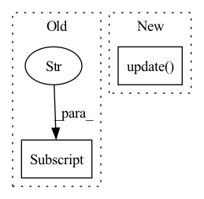

Pattern ID :1873

Before Change
def forward(self, item):
boxes, class_idx = item["boxes"], item["class_idx"]
matches, match_labels = self.get_matches(boxes, class_idx)
item["proposal_targets_cls"] = self.get_cls_targets(match_labels)
item["proposal_targets_reg"] = self.get_reg_targets(boxes, matches, match_labels)
After Change
matches, match_labels = self.get_matches(boxes, class_idx)
G_cls, M_cls = self.get_cls_targets(match_labels)
G_reg, M_reg = self.get_reg_targets(boxes, matches, G_cls)
item.update(dict(G_cls=G_cls, G_reg=G_reg, M_cls=M_cls, M_reg=M_reg))
In pattern: SUPERPATTERN
Frequency: 3
Non-data size: 2
Instances
Fragment ID: 13191673
Project Name: jhultman/vision3d
Commit Name: 03a0b92af929371cce91e1666b92f92192e49129
Time: 2020-02-22
Author: 27909223+jhultman@users.noreply.github.com
File Name: pvrcnn/core/proposal_targets.py
M Class Name: ProposalTargetAssigner
N Class Name: ProposalTargetAssigner
M Method Name: forward(2)
N Method Name: forward(2)
M Parent Class: nn.Module
N Parent Class: nn.Module
M File Name: pvrcnn/core/proposal_targets.py
N File Name: pvrcnn/core/proposal_targets.py
M Start Line: 103
M End Line: 104
N Start Line: 103
N End Line: 105
'>
Before Change
self.ce = CELoss()
def forward(self, pred: torch.Tensor, batch: Dict[str, Any], device: torch.device):
targets = batch["targets"].to(device)
dice_loss, _ = self.dice(pred, batch, device)
ce_loss, _ = self.ce(pred, batch, device)
total_loss = dice_loss + ce_loss
After Change
for weight, loss_fn in zip(self.weights, self.losses):
loss, loss_dict = loss_fn(pred, batch, device)
total_loss += (weight*loss)
total_loss_dict.update(loss_dict)
total_loss_dict.update({"Total": total_loss.item()})
return total_loss, total_loss_dict
'>
Fragment ID: 13191669
Project Name: kaylode/theseus
Commit Name: bd701b96ee6d212c8fe26fc01dc12941460e5931
Time: 2022-02-17
Author: pmkhoi@selab.hcmus.edu.vn
File Name: theseus/segmentation/losses/multi_loss.py
M Class Name: BCEwithDiceLoss
N Class Name: MultiLoss
M Method Name: forward(4)
N Method Name: forward(4)
M Parent Class: nn.Module
N Parent Class: nn.Module
M File Name: theseus/segmentation/losses/multi_loss.py
N File Name: theseus/segmentation/losses/multi_loss.py
M Start Line: 17
M End Line: 24
N Start Line: 18
N End Line: 26
'>
Before Change
mask = kwargs.get("mask", None)
if mask is not None and mask.shape[1] == x.shape[1]:
mask = mask[:, :-1]
kwargs["mask"] = mask
out = self.net(xi, **kwargs)
loss = F.cross_entropy(out.transpose(1, 2), xo, ignore_index = self.ignore_index)
After Change
num_mask = min(int(seq * self.mask_prob), seq - 1)
indices = rand.topk(num_mask, dim = -1).indices
mask = ~torch.zeros_like(inp).scatter(1, indices, 1.).bool()
kwargs.update(context_mask = mask)
out = self.net(inp, **kwargs)
out = out.transpose(1, 2)
'>
Fragment ID: 13191671
Project Name: lucidrains/x-transformers
Commit Name: 595a4745d532c20b8ebd310256c342e946a4cef7
Time: 2022-11-02
Author: lucidrains@gmail.com
File Name: x_transformers/autoregressive_wrapper.py
M Class Name: AutoregressiveWrapper
N Class Name: AutoregressiveWrapper
M Method Name: forward(2)
N Method Name: forward(2)
M Parent Class: nn.Module
N Parent Class: nn.Module
M File Name: x_transformers/autoregressive_wrapper.py
N File Name: x_transformers/autoregressive_wrapper.py
M Start Line: 107
M End Line: 118
N Start Line: 122
N End Line: 142